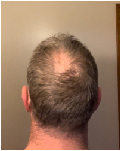
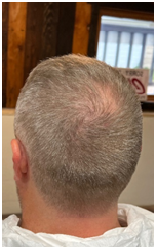
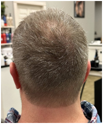
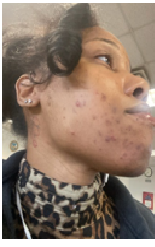
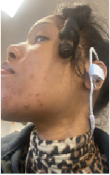
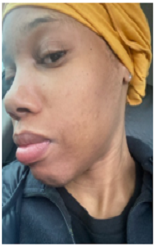
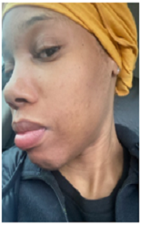

The UltraMito Rejuvenate 2.0
UltraMito Rejuvenate 2.0 is a multiuse topical cream. It is a second generation product in the UltraMito line of mitochondria-related products. Rejuvenate 2.0 UltraMito Rejuvenate 2.0 is highly recommended for anything that affects your hair scalp or skin anyplace on your body, face to feet, in an unwanted way.
About UltraMito Rejuvenate 2.0
UltraMito Rejuvenate 2.0 is highly recommended for for anything that affects your hair scalp or skin anyplace on your body, face to feet, in an unwanted way.
Rejuvenate is great for anything that causes you to itch, scratch, breakout or be irritated. For example consider using rejuvenate for:
XDS formulations rectify this problem in a powerful way.It typically uses only a fraction of the normal daily dose for a given ingredient, compared to how much of the same ingredient is commonly used in other nutritional supplement formulations. Yet XDS is so effective that much greater benefits can result. Nutrientstend to work faster and with much greater results for more people.
- joints that ache, hurt and cause you discomfort
- random bumps and breakouts
- fine lines and wrinkles
- sunburns or sun damage even if it’s decades-old
- burns, cuts or bruises
- insect bites
- dandruff and other scalp issues
- razor bumps
- cellulite
- hemorrhoids
- scars
- moles, warts and skin tags
- a natural deodorant
- natural hairstyling and repairing
- damaged hair
- footcare
- sore, tired eyes
- use in the nose to open up sinuses
- and much more…
- headaches
- neck, shoulder, back,, knee, ankle issues
- discomfort in extremities like hands or feet
- various exercise related injuries
- muscle strains and contusions
Rejuvenate also penetrates deep to affect tendons, ligaments, muscles and joints that may be aching, hurting and otherwise causingdiscomfort like:
The benefits of Rejuvenate can be especially important to those who:
- Want fresher younger looking skin
- Want a natural alternative to medication for discomfort
- Want to sharpen their vision and get quick relief in eyestrain
- Want to pursue a vigorous, athletic,workout routine
- Just want to be as healthy as they can possibly be with less emotional stress and physical discomfort
UltraMito Rejuvenate 2.0 Ingredients
- Purified Water
- Aloe Arborescens Leaf Extract
- Sodium Benzoate
- Potassium Sorbate
- Citric Acid
- Methylsulfonylmethane
- Palmitoylethanolamide
- Helianthus annuus (Sunflower) Seed Oil
- Emu Oil
- Phenoxyethanol
- Caprylyl Glycol
- Carbomer
- Triethanolamine
- Magnolol
- Honokiol
- Butylene
- Glycol
- Arnica montana Flower Extract
- Calophyllum inophyllum (Tamanu) Seed Oil
- Sorbitol
- Lavandula angustifolia (Lavender) Oil
- Melaleuca alternifolia (Tea Tree) Leaf Oil
How do I take Rejuvenate?
Thoroughly massage Rejuvenate into and around the affected area. Reapply multiple times a day as needed. Continue to use even after the discomfort is gone formore complete recovery. Rejuvenate can be used typically in combination with UltraMito Restore. Some like to put a teaspoon or so of Restore in their jar of Rejuvenate when they first opened it and shake it up or stir it in. It seems to give their skin and extra special glow.
Restore, Testimonies: Hear what people are saying (click on the links below to hear recordings)
David and Maricela S - Two weeks on MoreMito and my wife’s bodylooked 10 years younger … https://app.box.com/s/7yu9si2u7wniz6zw1obispw56sjq88vn
Jon K – My bald spot is regrowing hair after I used Restored and Rejuvenated it … https://app.box.com/s/3boln16xyui45iyla274gqk8ka1ratkt
  Imani B –I started having severe skin issues because of hormonal changes during my pregnancy that would not go away … https://app.box.com/s/o3ftoovbtvzevhjamgpzrzwsqe2sak0t
  

Bill C - I recovered from a wound and bone disorder on my toe thanks to Rejuvenate and Restore https://app.box.com/s/4bbkoqxz8ieuvdnu4dbzypchta9yl2dj
Johnnie B - I got relief from a 41-year-old knee injury in less than 41 minutes with Rejuvenate_2min25 https://app.box.com/s/4bbkoqxz8ieuvdnu4dbzypchta9yl2dj
Gary B - Because of my blood sugar issues they wanted to amputate my leg instead I used Rejuvenate and Restore_3min48 https://app.box.com/s/xk92cvd8m6d9x07y85nnqerd8wk9oi2p
JReed M - I had scalp issues for years and extreme discomfort in ankles and feet due to blood sugar issues that made me want to cut themoff then I tried Rejuvenate_3min30 https://app.box.com/s/nytueefr0zi1oe2bh4m6dzcwucthqkvf
Connie J - I had severe migraine headaches for years then I tried Rejuvenate_2min48 https://app.box.com/s/tr3p11v4kiv6nmrnnpdy2uw947lmwrcd
Grace W - Dinah R - Unbelievably our vision spontaneously improved minutes after applying Rejuvenate with Restore in it__2min0 https://app.box.com/s/gi9thd99vj0zj5t64ay1gf4nc3bxzw9p
Juanita L - My cellulite is gone and my feet are fabulous after using Rejuvenate and Restore_3min57 https://app.box.com/s/rm37e18do3zclvlaq6cfc68q0s5eco1p